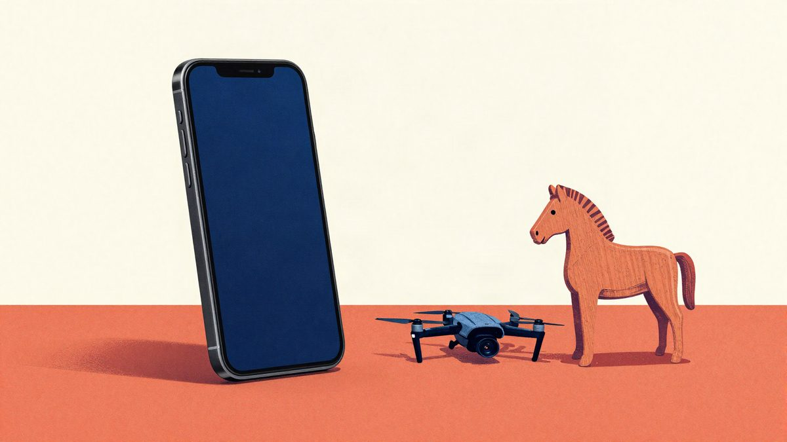

Prevaranti su preuzeli kontrolu nad mobitelom: lažni "klijentski servis" kupio je devet DJI kamera na žrtvin kredit

U Kini je žrtva po imenu Cui u aplikaciji za karaoke dobila poruku o greškom aktiviranom članstvu i instalirala aplikaciju nepoznatog podrijetla s trojancem. Prevaranti su s njegova kreditnog limita od oko 5.100 eura kupili devet DJI kamera, no policija je zamrznula transakcije, presrela pakete i vratila robu žrtvi.
Kineski mediji prenose slučaj u kojem su prevaranti trojancem preuzeli kontrolu nad mobitelom jednog građanina. S njegove kreditne linije od 40.000 juana (oko 5.100 eura) kupili su devet DJI kamera. Slučaj je objavljen 7. studenoga, a žrtva je poznata samo kao g. Cui.
Cui je u aplikaciji za karaoke Quanmin K Ge dobio privatnu poruku nepoznate osobe. Pošiljatelj je tvrdio da je Cui greškom aktivirao plaćeno članstvo i da će mu se novac nastaviti automatski naplaćivati ako ne slijedi dane upute. Cui je povjerovao pa je prema uputama preuzeo i instalirao aplikaciju nepoznatog podrijetla.
S tom aplikacijom na telefon je stigao i trojanac, a od tog trenutka prevaranti su mobitelom upravljali na daljinu. Iskoristili su kreditni limit od 40.000 juana i kupili devet DJI kamera.
Policija zaustavila pošiljke
Policija je pokrenula mehanizam međuregionalne suradnje za povrat sredstava. Istražitelji su se istodobno obratili platformi za e-trgovinu i pružateljima usluga plaćanja. Transakcije su zamrznute, a paketi presretnuti i nisu stigli do prevaranata. Kupljena roba vraćena je Cuiju.
Savjeti stručnjaka
Stručnjaci upozoravaju da su takozvani "klijentski servisi" koji se iznenada pojave u privatnim porukama na zabavnim i društvenim platformama vrlo nepouzdani. Poruka koja se poziva na greškom aktivirano članstvo, neuobičajenu aktivnost računa ili potrebu provjere podataka, a traži klik na nepoznatu poveznicu ili instalaciju neslužbene aplikacije, tipičan je obrazac prijevare.
Preporuke stručnjaka:
- Ne vjerovati nepoznatim pozivima, osobito onima koji se predstavljaju kao banka, platforma ili njezin zaposlenik. Prema njihovim uputama ne treba prebacivati novac ni mijenjati postavke računa.
- Ne otvarati nepoznate poveznice iz SMS-a i s društvenih mreža jer mogu voditi na phishing stranice ili sadržavati zlonamjerni software.
- Ne uključivati dijeljenje zaslona i ne dopuštati daljinsko upravljanje uređajem. Tako prevaranti mogu doći do podataka o bankovnoj kartici, SMS kodova za potvrdu i lozinki te izvršiti neovlaštene kupnje.
U ovom slučaju policija je reagirala brzo, dok pošiljke još nisu bile isporučene, pa su transakcije zamrznute, paketi presretnuti, a kupljena roba vraćena žrtvi.
Izvor: MyDrivers (快科技)